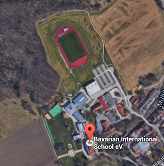
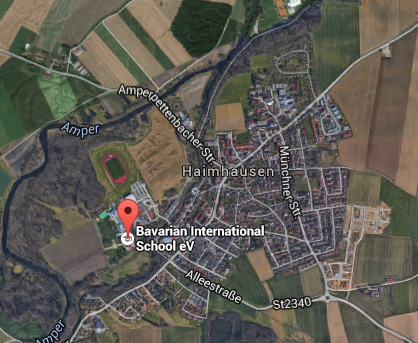
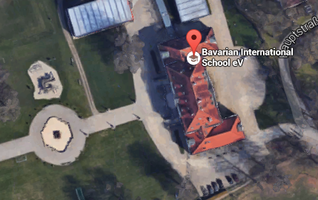

In 1281, Schloss Haimhausen was listed as a castle (castrum) in a gazetteer of Upper Bavaria. It was destroyed in the Thirty Years War and rebuilt only in 1660, for an Imperial as an ornate Baroque structure by Andreas Wolff.
In 1747 and ensuing years, Francois Cuvillies the Elder, enlarged the villa by seven bays on each side and added two wings. The external form of the house, with the high roof typical of the region, has remained unchanged to this day. The banqueting hall on the second floor (third story), with its ceiling painting of The Four Seasons by Bergmuller (dated 1750) and its two rare Nymphenburger porcelain stoves, forms the visual climax of the state apartments of Schloss Haimhausen. The remarkable chapel owes its splendour to its ceiling painting, again by Bergmuller (Salvator Mundi, dated 1750), together with delicate Rococo stucco work by Verhelst.
The beautiful Golden Room on the second floor was decorated by Cuvilliés, who also executed other decorative architecture in such famous buildings as the Munich Residenz (royal palace), the Residenz Theatre, the manor Amalienburg in the grounds of Schloss Nymphenburg, and rooms in Schloss Brühl, near Bonn. The ceiling murals in both the Golden Room and the Chapel were executed by the famous Augsburg artist, Johann Bergmüller, in 1750.
The last member of the Viepeckh family, Count Sigmund, was a renowned politician, scientist and intellectual. Sigmund was instrumental in setting up the now world-famous Nymphenburg Porcellain factory and was a founding member of the Bavarian Academy of Sciences (1753). Count Sigmund von Viepeckh died leaving no heirs to his estate.
The property was sold to James Eduard Haniel, an ancestor of the Haniel brewing family who are still our neighbours. Under James Haniel the park around the Schloss was redeveloped into an English style park. In 1794 the manor moved into the hands of the Counts Buttler of Haimhausen. By the 1930s the manor house had become too expensive to maintain and heat, and it ceased to be used as a family home. During World War 2 the chapel was used as storage place for thousands of books from the Bavarian State Library. Between 1949 and 1975 the Schloss was used by the Bavarian Legal Aid School and later the Munich Police Academy. Between 1976 and 1986 the International Antiques Salon occupied all rooms with its period exhibits.
In 1983 the Schloss was sold by the Haniel family to the art-loving couple Hans Daxer and Louise Piech, who restored the building to its former glory during their residency.
The Bavarian International School acquired the Schloss in 1997 and during the ensuing year carefully and tastefully remodelled the interior to serve as classrooms and offices, and built a three-storey lower school building, sports hall and library pavillion. In September 1998 the school opened its doors for the first time in its beautiful new home.
All this information was taken from the Bavarian International School Website. If you want to read about space go to this websiteThe Bavarian International School is located in the Hauptstraße 1, 85778 Haimhausen.
The Schloss is adjacent to the school so the adress is the same.

The Bavarian International School
The Haimhausen Schloss
The Haimhausen Town
 Site by: Alejandro Quetglas April 2016. No rights reserved. Version: 1.0 (if there are any questions feel free to ask them here.
Site by: Alejandro Quetglas April 2016. No rights reserved. Version: 1.0 (if there are any questions feel free to ask them here.